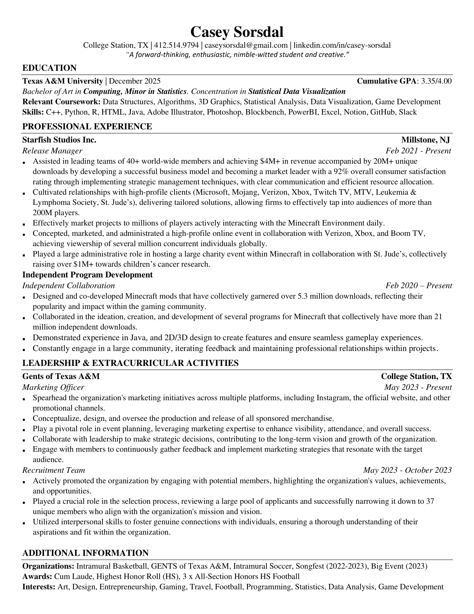

CS | QUALIFICATIONS |
PORTFOLIO |
SERVICE |
CREATIVITY |
Here is my technical resume.
C++, Python, R, HTML, Java, Adobe Illustrator, Photoshop, Blockbench, PowerBI, Excel, Notion, GitHub, Slack, Discord
Computer science has always interested me. Whether it was as a kid, breaking down games just to see how they are made, or programming small python programs to make my highschool work a little bit easier. Programming has always been a major part of my life. What REALLY kicked off my interest in the subject was the game of Minecraft: I began to program mods and additions to the game 4 years ago. That lead me to the job I work today, and has played a large role in all of my interests. I wish to eventually get into game development.